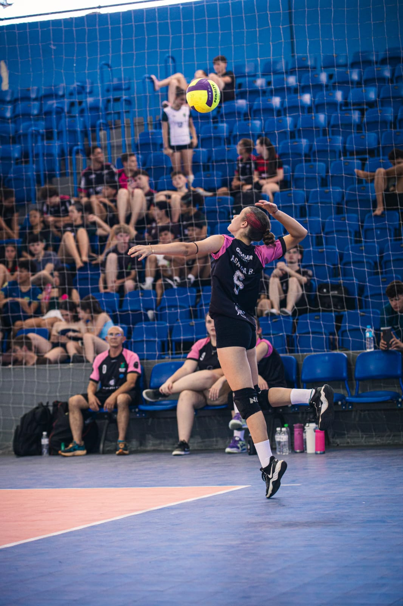

Biografia
Olá, meu nome é Agatha Isabelli Wronski Bento. Nasci em Cascavel (PR) no dia 06/01/2009.
Desde de criança, eu era apaixonada por arte, natureza, historia e para quebrar um pouco essa linha
por esporte também. E isso me define muito bem hoje em dia, mudando minha forma de ver o mundo e as
pessoas.
Atualmente, sou aluna do 3º ano do Ensino Médio Integrado ao Técnico em Informática no IFPR - Campus
Cascavel. Apesar da formação técnica, pretendo seguir carreira na área de Biomedicina,
unindo minha experiência prática em laboratório que adquiri estudando na instituição, com a minha paixão por
natureza.
Minhas Preferências
Esportes favoritos
- Vôlei de Quadra
- Vôlei de Praia
- Patinação artística
- Ginástica
Musicais Favoritos
- K-pop
- Pop
- Rock
- Musica Clássica
Comidas Favoritas
- strogonoff
- Macarrão com carne de panela/moída
- Pizza/Hamburguer
Esportes na visão da Agatha
Sou atleta a 7 anos, minha modalidade principal atualmente é o vôlei de quadra porém já fui atleta de outras modalidades como kung fu, aonde treinei por muitos anos até me encontrar no vôlei. Cheguei a jogar federada, pelo VCC-Vôlei Clube Cascavel mas infelizmente não pude continuar por questões estudantis. Joguei muitos campeonatos tanto federada como pela instituição na qual estudo, como por exemplo, o JIFSPR, um campeonato que guardei no coração, onde conheci pessoas maravilhosas e joguei jogos incríveis.
